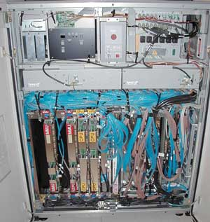

Алексей Борзенко
С момента появления первых вычислительных устройств их создатели пытались усовершенствовать свои творения, в частности, повысить их эффективность за счет увеличения производительности или изобрести новые устройства, более совершенные. Суперкомпьютеры работают очень быстро не только благодаря самой современной элементной базе, но и за счет принципиальных решений, заложенных в их архитектуру. Основную роль здесь играет принцип параллельной обработки данных, воплощающий идею одновременного (параллельного) выполнения нескольких действий. С аппаратной точки зрения для реализации параллельных систем напрашиваются две основные схемы. Первая - несколько отдельных систем, с локальной памятью и процессорами, взаимодействующих в какой-либо среде посредством посылки сообщений. Вторая - системы, взаимодействующие через разделяемую память. Существуют и промежуточные архитектуры, где память физически распределена, но логически общедоступна.
Можно перечислить ряд задач, предъявляющих высокие требования к производительности систем. Вот лишь краткий список отраслей, в которых не обойтись без использования высокопроизводительных вычислений HPC (High Performance Computing): автомобилестроение, авиационная промышленность, атомная промышленность, космические исследования, разведка нефти и газа, химическая промышленность, фармакология, прогноз погоды, сейсмическая разведка, системы принятия решений.
Корпорация NECРынок суперкомпьютеров довольно узок; работают на нем в основном крупные американские и японские компании. Одна из них - японская корпорация NEC (Nippon Electronic Company, http://www.nec.co.jp) со штаб-квартирой в Токио. Компания основана в 1899 г., сегодня в Японии работает 89 ее подразделений, 61 завод и около 420 офисов, занимающихся продажами. За пределами Японии у NEC функционирует 93 подразделения и 40 заводов в 18 странах, а также маркетинговые, сервисные и научно-исследовательские подразделения в 29 странах. Общее количество служащих - около 170 тыс. человек. NEC - единственная в мире промышленная структура, входящая в первую мировую пятерку одновременно в области телекоммуникаций, компьютеров и полупроводников. Корпорация выпускает суперкомпьютеры, компьютеры, электронные приборы и оборудование связи (всего примерно 15 тыс. наименований продукции). Особенно заметных результатов NEC добилась в области создания параллельно-векторных систем. В марте 2002 г. корпорация представила систему Earth Simulator из 5120 векторно-конвейерных процессоров, производительность которой в пять раз превысила показатель предыдущего обладателя рекорда - MPP-системы ASCI White, состоящей из 8192 суперскалярных микропроцессоров. Это, конечно же, заставило многих по-новому взглянуть на перспективы векторно-конвейерных систем.
|
Первый векторно-конвейерный компьютер Cray-1 появился в 1976 г. Архитектура его оказалась настолько удачной, что он дал начало целому семейству компьютеров PVP (Parallel Vector Processing). Название этому семейству дали два принципа, заложенных в архитектуре процессоров: конвейерная организация обработки потока команд и введение в систему команд набора векторных операций, которые позволяют работать с целыми массивами данных.
Длина одновременно обрабатываемых векторов у векторных компьютеров может составлять, например, 128, 256 и более элементов. Очевидно, что векторные процессоры должны иметь гораздо более сложную структуру и по сути дела содержать множество арифметических устройств. Основное назначение векторных операций состоит в том, чтобы распараллелить выполнение операторов цикла, в которых в основном и сосредоточена большая часть вычислительной работы. Для этого циклы подвергаются процедуре векторизации с тем, чтобы их можно было реализовать с использованием векторных команд. Как правило, это автоматически выполняют компиляторы при подготовке исполнимого кода программы. Поэтому изначально векторно-конвейерные компьютеры не требовали никакой специальной технологии программирования, что и стало решающим фактором в их успехе на компьютерном рынке. Тем не менее при написании циклов требовалось соблюдение некоторых правил с тем, чтобы компилятор мог их эффективно векторизовать.
Исторически это были первые компьютеры, к которым в полной мере было приложимо понятие "суперкомпьютер". Как правило, несколько векторно-конвейерных процессоров работали в режиме с общей памятью (SMP, Symmetric MultiProcessing), образуя вычислительный узел, а несколько таких узлов объединялись с помощью коммутаторов, образуя либо NUMA- (Non-Uniform Memory Access), либо MPP-систему. Основным параметром классификации параллельных компьютеров служит наличие общей (SMP) или распределенной памяти (MPP, Massive Parallel Processing). Нечто среднее между SMP и MPP представляют собой NUMA-архитектуры, где память физически распределена, но логически общедоступна. Кластерные системы представляют собой более дешевый вариант MPP. При поддержке команд обработки векторных данных говорят о векторно-конвейерных процессорах, которые, в свою очередь, могут объединяться в PVP-системы с использованием общей или распределенной памяти.
Суперкомпьютеры, разработанные по технологии MPP, объединяют большое число микропроцессоров - вплоть до нескольких тысяч, - соединяя каждый из них с локальным банком памяти посредством высокоскоростной коммутационной среды. Главная особенность систем с симметричной многопроцессорной архитектурой SMP - наличие общей физической памяти, разделяемой всеми процессорами (напомним, что в массивно-параллельной архитектуре MPP память физически разделена). В этом случае система строится из отдельных модулей, содержащих процессор, локальный банк операционной памяти, два коммуникационных процессора или сетевой адаптер, иногда жесткие диски и/или другие устройства ввода-вывода. Один коммутационный процессор обычно используется для передачи команд, другой - для передачи данных. По сути, такие модули представляют собой полнофункциональные компьютеры. Доступ к банку оперативной памяти из конкретного модуля имеют только процессоры того же модуля. Модули соединяются специальными коммуникационными каналами.
Гибридная архитектура NUMA воплощает в себе удобства систем с общей памятью и относительную дешевизну систем с раздельной памятью. Суть этой архитектуры состоит в особой организации памяти. Здесь память физически распределена по различным частям системы, оставаясь логически разделяемой, так что пользователь видит единое адресное пространство. Система формируется из однородных базовых модулей, состоящих из небольшого числа процессоров и блока памяти. Модули объединены с помощью высокоскоростного коммутатора. Поддерживается единое адресное пространство, аппаратно организован доступ к удаленной памяти, т. е. к памяти других модулей. При этом доступ к локальной памяти осуществляется в несколько раз быстрее, чем к удаленной. По существу архитектура NUMA представляет собой массивно-параллельную архитектуру, где в качестве отдельных вычислительных элементов выступают SMP-узлы.
Основной признак параллельно-векторных систем PVP - наличие специальных векторно-конвейерных процессоров, в которых предусмотрены команды однотипной обработки векторов независимых данных, эффективно выполняющиеся на конвейерных функциональных устройствах. Как правило, несколько таких процессоров работают одновременно над общей памятью (аналогично SMP) в рамках многопроцессорных конфигураций. Несколько таких узлов могут объединяться с помощью коммутатора.
Первый векторно-конвейерныйКогда состоялся дебют Cray-1, определение "векторный" однозначно ассоциировалось с супервычислениями. Суперкомпьютеры Cray получили свое имя в честь изобретателя этих машин, американского инженера Сеймура Крэя (Seymour Cray). В 1972 г. Крэй, к тому времени уже бывший сотрудник и один из руководителей фирмы CDC, организовал собственную компанию Cray Research, которая занялась проектированием сверхбыстродействующей ЭВМ (ставшей известной под названием Cray-1) с быстродействием, превосходящим сотню миллионов операций в секунду. Память этой машины была выполнена в виде 16 блоков общей емкостью в 1 млн 64-разрядных слов. Допускалось одновременное обращение к этим блокам таким образом, что реальное время обращения становилось равным 12,5 нс, в то время как время обращения к одному блоку было равно 50 нс. Основная память машины Cray-1, в отличие от других высокопроизводительных машин, не имела иерархической структуры, она была столь быстра, что необходимость в такой иерархии отпала. Машина Cray-1 стала самой быстродействующей из класса однопроцессорных систем. В состав центрального процессора Cray-1 входили:
Двенадцать функциональных устройств машины Cray-1, игравшие роль арифметико-логических преобразователей, не имели непосредственной связи с главной памятью. Как и в машинах семейства CDC-6000, они имели доступ только к быстрым операционным регистрам, из которых выбирались операнды и на которые засылались результаты после выполнения соответствующих действий. Суперкомпьютер Cray-1 установили в исследовательской ядерной лаборатории в Лос-Аламосе в 1976 г. Объем памяти этой машины составлял рекордные по тем временам величины, а быстродействие в пиковых режимах достигало 160 MFLOPS (миллиардов операций в секунду). Чтобы ускорить работу системы, Крэй решил собрать компьютер в виде буквы "С" - это позволило уменьшить расстояние между разными электронными компонентами машины, а значит, сократить задержки и увеличить ее производительность. Пожертвовать пришлось дизайном и удобством в обслуживании. Cray-1 охлаждался с помощью очень большой и очень шумной фреонной установки. Но для ученых главным всегда был не внешний вид, а эффективность.
|
Большое разнообразие архитектур вычислительных систем породило естественное желание ввести для них какую-то классификацию. Эта классификация должна была однозначно относить ту или иную вычислительную систему к некоему классу, который, в свою очередь, должен достаточно полно ее характеризовать. Таких попыток предпринималось множество. Одна из первых классификаций, ссылки на которую чаще всего встречаются в литературе, была предложена М. Флинном в конце 60-х годов прошлого века. Она базируется на понятиях двух потоков: команд и данных. На основе числа этих потоков выделяется четыре класса архитектур: SISD (Single Instruction Single Data) - единственный поток команд и единственный поток данных, SIMD (Single Instruction Multiple Data) - единственный поток команд и множественные потоки данных, MISD (Multiple Instruction Single Date) - множественные потоки команд и единственный поток данных и, наконец, MIMD (Multiple Instruction Multiple Date) - множественные потоки команд и данных.
Суперкомпьютеры NEC SX
Типичным примером PVP-решений могут служить системы SX, которые создает подразделение корпорации NEC - HNSX Supercomputers (http://www.sw.nec.co.jp). Развитие PVP-архитектуры продолжается, а суперкомпьютеры на ее основе в ряде случаев существенно опережают конкурентов. NEC имеет давние традиции производства больших универсальных ЭВМ (достаточно упомянуть выпускавшиеся в 80-х годах мэйнфреймы ACOS). Примерно в то же время появились и первые суперкомпьютеры семейства SX. Процессоры в SX-1 имели пиковую производительность 570 MFLOPS. Во второй половине 80-х были разработаны NEC SX-2 со временем цикла 6 нс; пиковая производительность старшей модели SX-2 составила уже 1,3 GFLOPS. В 1989 г. была выпущена NEC SX-3 с пиковой производительностью центрального процессора около 5 GFLOPS, в состав которой входило до четырех процессоров. Основные характеристики одноузловых систем семейства SX приведены в табл. 1.
Таблица 1. Характеристики одноузловых систем NEC SX
| Модель | SX-2 | SX-3 | SX-4 | SX-5 | SX-6 | SX-7 |
| Число процессоров | 1 | 4 | 32 | 16 | 8 | 32 |
| Пиковая производительность на процессор, GFLOPS | 1,3 | 5,5 | 2 | 8 | 8 | 8,83 |
| Пиковая производительность системы, GFLOPS | 1,3 | 22 | 64 | 128 | 64 | 282 |
| Максимальная емкость оперативной памяти, Гбайт | 0,256 | 2 | 16 | 128 | 64 | 256 |
| Общая пропускная способность памяти, Гбайт/с | 11 | 44 | 512 | 1024 | 256 | 1129 |
| Пропускная способность памяти на процессор, Гбайт/с | 11 | 22 | 16 | 64 | 32 | 35,3 |
К современному поколению суперкомпьютеров следует относить КМОП-cистемы NEC SX-5 и SX-6. Здесь следует напомнить, что многие суперкомпьютеры долгое время использовали ЭСЛ-технологию (транзисторы с эмиттерно-связанной логикой), которая отличается достаточно высоким энергопотреблением. Во многом именно благодаря применению КМОП-технологии системы SX-4 стали первыми в мире суперкомпьютерами PVP-архитектуры, работающими с воздушным, а не с жидкостным охлаждением. Современные полупроводниковые КМОП-микросхемы обеспечили не только более высокую степень интеграции, но и хорошую масштабируемость по частоте.
Когда NEC в 1995 г. анонсировала суперкомпьютеры SX-4, большинство специалистов в области высокопроизводительных вычислений считали, что этот суперкомпьютер станет последним "динозавром" векторной архитектуры. Однако сейчас, с появлением масштабируемых векторных систем, интерес пользователей к векторным архитектурам возвращается. Кстати, на момент выпуска модель SX-4 показала производительность на уровне 1 TFLOPS.
|  | Начинка суперкомпьютера SX-4A.
|
Суперкомпьютеры различных поколений NEC совместимы снизу вверх. К основным компонентам архитектуры NEC SX относятся центральный процессор, подсистема оперативной памяти и подсистема ввода-вывода. Эти компоненты объединяются в узлы SMP-архитектуры, которые, в свою очередь, связаны через межсоединение Internode Crossbar Switch (IXS). Вся память всех узлов является общей; иными словами, многоузловые модели SX имеют архитектуру NUMA.
Каждый центральный процессор в NEC SX состоит из двух основных блоков: векторного и скалярного устройств. В архитектуре SX имеются операционные векторные регистры (над ними выполняются основные команды) и векторные регистры данных. В большинстве случаев применение векторных регистров позволяет заметно уменьшить трафик при обмене данными между центральным процессором и оперативной памятью.
Исполнительные блоки векторного устройства конвейеризованы. Основные конвейеры в SX - блоки сложения/сдвига, умножения, деления и логических операций. Как характерно для многих PVP-систем, операции над векторами могут выполняться при участии маски, для чего в архитектуре предусмотрено наличие регистров маски.
Скалярное устройство в SX содержит кэш данных и кэш команд, а также 64-разрядные регистры общего назначения. Так, для SX-5 размеры указанной кэш-памяти составляют по 64 Кбайт, а число регистров общего назначения равно 128. Все команды выдает на исполнение скалярное устройство, способное декодировать до четырех команд за такт. Например, как скалярное, так и векторное устройства SX-5 оперируют с 32- и 64-разрядными числами с плавающей точкой в формате IEEE. Скалярное устройство SX-5 поддерживает также 128-разрядные числа расширенной точности.
В составе процессора, кроме основных блоков - скалярного и векторного, можно также выделить интерфейс с оперативной памятью и так называемые коммуникационные регистры. Они служат в первую очередь для обеспечения синхронизации при распараллеливании задач.
Подсистема памяти SMP-узлов SX доступна процессорам через неблокирующийся коммутатор. Так, каждая плата памяти SX-5 может иметь емкость 4 Гбайт, а весь 16-процессорный узел - до 128 Гбайт. Вся оперативная память разбита на банки. Платы памяти SX умеют обрабатывать запросы к оперативной памяти во внеочередном порядке, что повышает эффективную пропускную способность при наличии конфликтов по обращению к банку памяти. Конвейерная выдача данных из памяти, поддержка переупорядочения запросов к памяти для уменьшения конкуренции из-за доступа к ней, наличие аппаратных средств, позволяющих скрыть задержки при обращении к оперативной памяти, - все это обеспечивает высокую реальную пропускную способность памяти.
В NEC SX используется страничная адресация оперативной памяти. За счет этого программные модули могут загружаться в несмежные области физической оперативной памяти, т. е. устраняются проблемы фрагментации. IXS обеспечивает работу с таблицами страниц при глобальной адресации оперативной памяти, с коммуникационными регистрами и командами глобальной пересылки данных.
Основные блоки подсистемы ввода-вывода в NEC SX - специализированные процессоры. Эти функциональные устройства разгружают центральный процессор от непосредственного управления вводом-выводом. Стоит отметить, что в NEC SX-5 пропускная способность процессоров ввода-вывода была увеличена вдвое по сравнению с SX-4 и составляет около 3,2 Гбайт/с. SMP-узел SX-5 может содержать до четырех таких устройств. Каждое из них способно поддерживать работу многих каналов ввода-вывода при наличии соответствующих канальных плат. Основные типы канальных карт в SX - HIPPI-800 (100 Мбайт/с), FC-AL (1 Гбит/с) и Ultra SCSI.
Серия SX-5
Эти суперкомпьютеры предназначены для крупномасштабных параллельных вычислений, что обеспечивается набором параллельно работающих узлов, каждый из которых, в свою очередь, представляет собой полноценный векторно-конвейерный SMP-суперкомпьютер.
| Суперкомпьютер SX-5.
|
Каждый узел в максимальной конфигурации предоставляет вычислительную производительность до 128 GFLOPS, объем основной памяти до 128 Гбайт и пропускную способность каналов ввода-вывода до 12,6 Гбайт/с. Специалисты отмечают, что таких показателей не имела ранее ни одна система с разделяемой памятью; стоит лишь сказать, что производительность обменов с памятью для полного узла достигает 1 Тбайт/с. В узел встроено достаточное количество независимых банков памяти, чтобы минимизировать конфликты, связанные с использованием микросхем памяти между 16 индивидуальными процессорами (с пиковой векторной производительностью 8 GFLOPS каждый). Скалярная производительность достигает 500 MFLOPS. Системы SX-5 используют высокоскоростной неблокирующий коммутатор IXS, чтобы связать между собой до 32 таких узлов. В этом случае пиковая производительность может достигать 4 TFLOPS.
В системах семейства SX-5 пиковая производительность процессора, объем памяти и пропускная способность канала процессор - память улучшились равномерно в четыре раза по сравнению с системами SX-4. По данным пользователей SX-5, на большинстве реальных приложений достигается не менее 90% пиковой производительности, в то время как для масштабируемых параллельных систем RISC-архитектуры неплохим результатом считается от 15 до 30% пиковой производительности.
Серия SX-6
Суперкомпьютеры семейства SX-6 представляют собой параллельные векторные системы с пиковой производительностью всей системы до 8 TFLOPS. Они были впервые представлены в октябре 2001 г. В систему может входить до 128 узлов, каждый из которых включает от двух до восьми процессоров и общую память до 64 Гбайт. Пиковая производительность одного процессора достигает 8 GFLOPS - так же, как в SX-5.
| Суперкомпьютер SX-6.
|
Высокая производительность SX-6 достигается за счет использования до 8 Тбайт памяти SDRAM (256-разрядные микросхемы) и системного коммутатора с высокой пропускной способностью. В многоузловой системе обеспечивается пропускная способность памяти на уровне 32 Тбайт/с. Серия SX-6 унаследовала от SX-5 архитектуру с разделяемой памятью и КМОП-технологию. Относительно низкая цена и сравнительная компактность системы SX-6 обусловлена размещением процессора целиком на одной микросхеме и использованием жестких проектных норм 0,15-мкм технологии, тогда как процессор SX-5 выпускается по 0,25-мкм технологии, а для своей реализации требует 32 микросхемы среднего уровня интеграции.
По сравнению с SX-5 более чем на 80% уменьшились линейные габариты суперкомпьютера и потребление электроэнергии, что, в свою очередь, позволяет применять во всех моделях воздушное охлаждение. Представители NEC заявляют, что эти два фактора (габариты и потребление электроэнергии) значительно повлияли на резкое снижение стоимости установки и обслуживания суперкомпьютеров SX-6. А производство по 0,15-мкм технологии привело к резкому уменьшению числа компонентов системы и соответственно к существенному повышению надежности оборудования.
Вместе с SX-6 поставляется системное ПО, позволяющее соединенным по сети персональным компьютерам, рабочим станциям Unix и суперкомпьютерам серии SX-6 работать в качестве единой системы. Инструменты и библиотеки для разработки параллельных задач включают MPI, отладчик Total View и инструмент Vampir/SX для оценки производительности программы. ОС и прочее ПО были модифицированы для поддержки увеличенной многоузловой системы. Базовая ОС SUPER-UX предлагает улучшенную поддержку SSI (Single System Image), вместе с тем обеспечивая совместимость с SX-5. Помимо С++ и Fortran 90, имеются такие средства разработки, как OpenMP и HPF 2.0
Серия SX-6 также предлагает Web Supercomputing Environment (WSE) в качестве средства объединения в единый вычислительный комплекс суперкомпьютеров, Unix-серверов и ПК, подключенных к Интернету или интрасети. При помощи этой системы пользователи могут загружать приложения, находящиеся в единой многомашинной системе, манипулировать файлами и выполнять различные команды, используя интуитивно понятные GUI-операции.
Различие между одноузловыми моделями А и В заключается в том, что модель А сконфигурирована на восемь процессоров (64 GFLOPS) и 64 Гбайт основной памяти, в то время как модель В имеет до четырех процессоров (32 GFLOPS) и только 32 Гбайт основной памяти.
Серия SX-6i
В феврале 2002 г. NEC представила новый компактный суперкомпьютер SX-6i, состоящий из одного векторного процессора. Специальный микропроцессор для векторных компьютеров, разработанный корпорацией, имел пиковую векторную производительность 8 GFLOPS; пропускная способность памяти составляла 32 Гбайт/c. Не так давно такая скорость достигалась лишь на больших суперкомпьютерах. Процессор соединен с однородной оперативной памятью объемом в 4 или 8 Гбайт.
Система SX-6i предназначалась для размещения в лабораториях для научно-технических исследований и для разработок ПО, причем была рассчитана на использование на рабочих местах подобно обычному персональному компьютеру. Компьютер был представлен в трех различных конфигурациях: одной настольной и двух, устанавливаемых в стойке. В настольной системе системный блок NEC SX-6i стал самым маленьким векторным суперкомпьютером. Система содержит один процессор SX-6 и 8 или 4 Гбайт оперативной памяти. Подсистема ввода-вывода поддерживает до шести каналов, которые могут быть заняты различными интерфейсами для дисков и сети и другими периферийными устройствами. Что касается системы, размещаемой в стойке, она, как уже отмечалось, представлена в двух вариантах. Стойка 25U содержит одну систему SX-6i, оставляя больше места для внутренних периферийных устройств. В стойку 37U устанавливаются две независимые системы SX-6i. Технические данные процессора и памяти аналогичны настольной версии.
Серия SX-7
В октябре 2002 г. было объявлено о выпуске нового продукта в линейке SX-серии - SX-7. С данной серией связана некоторая путаница. Дело в том, что эти системы (на шкафах которых действительно написано SX-7), по заверению самих же разработчиков NEC, хотя и содержат новые технологии, на самом деле представляют собой лишь расширение SX-6-архитектуры, но никак не ее революционное продолжение. Создание таких систем было рассчитано лишь на некоторых пользователей в Японии, однако эти суперкомпьютеры сумели привлечь к себе внимание специалистов со всего мира. Так, пиковая производительность одного узла системы SX-7 составляет 282,5 GFLOPS, что в три с лишним раза больше по сравнению с SX-6 (см. табл. 1). Всего машина может содержать до 64 подобных узлов. Узел SX-7 поддерживает до 32 процессоров, что вчетверо больше по сравнению с SX-6. В максимальной многоузловой конфигурации пиковая производительность суперкомпьютера достигает 18,1 TFLOPS. Как уже отмечалось, повышение производительности достигается в результате ряда усовершенствований, в частности, увеличения емкости совместно используемой памяти на каждом узле с 64 до 256 Гбайт, а также повышения максимальной скорости передачи данных с 256 Гбайт/с до 1,13 Тбайт/с. Улучшены и процессоры (в системе используются оригинальные процессоры разработки NEC): если быстродействие прежних составляло 8 GFLOPS, то у новых оно достигает 8,83 GFLOPS.
| Суперкомпьютер SX-7.
|
Серия SX-8
Осенью прошлого года NEC представила новую серию суперкомпьютеров SX-8, одна из моделей которой, согласно утверждению компании, стала самым быстрым в мире на сегодняшний день векторным суперкомпьютером, обладая быстродействием до 65 TFLOPS. SX-8 существует в трех версиях - две с одним узлом (табл. 2) и одна система, состоящая из большего количества узлов (табл. 3). Результат в 65 TFLOPS - наивысший показатель, который могла бы показать последняя. Максимальное число узлов в ней - 512, каждый из которых имеет по восемь процессоров (т. е. общее число процессоров достигает 4096). Максимальный объем адресуемой памяти составляет 64 Тбайт, максимальная скорость обмена данными с памятью - 262 Тбайт/с.
| Суперкомпьютер SX-8.
|
Пиковая производительность каждого такого компьютера достигает 128 GFLOPS (128 млрд операций с плавающей точкой в секунду). По заявлению корпорации, объединение 512 таких машин (высотой 2 м каждая) позволяет создать суперкомпьютер с производительностью 128 TFLOPS. Эти системы используют векторную архитектуру, аналогичную той, что применяется в Earth Simulator (который на протяжении нескольких лет был самым мощным вычислительным комплексом в мире). Однако они построены на базе усовершенствованных процессоров, выполненных с учетом технологических норм 90 нм и с технологией медных межсоединений. Тактовая частота конвейера векторной обработки составляет 2 ГГц. Здесь на одном кристалле интегрированы блоки векторной и скалярной обработки. Кроме того, в числе особенностей системы называют большой объем памяти и высокоскоростные межузловые соединения с пиковой пропускной способностью до 16 Гбайт/с. NEC разработала три модели SX-8 - SX-8/B (одноузловая, 1-4 процессора), SX-8/A (одноузловая, 4-8 процессоров) и SX-8/M (от двух до 512 узлов, 8-4096 процессоров).
В корпорации рассчитывают поставить более 700 компьютеров SX-8 в течение ближайших трех лет. Архитектура машин, как правило, ориентирована на задачи, требующие анализа большого объема данных, такие, как прогнозирование погоды, моделирование природных явлений и столкновений автомобилей.
Таблица 2. Характеристики одноузловой системы NEC SX-8
| Тип шасси | A | B |
| Число процессоров | 4-8 | 1-4 |
| Пиковая производительность, GFLOPS | 88-176 | 22-88 |
| Пиковая векторная производительность, GFLOPS | 64-128 | 16-64 |
| Объем памяти векторных регистров на один процессор, Кбайт | 144 | 144 |
| Объем памяти скалярных регистров на один процессор | 64 бит х 128 | 64 бит х 128 |
| Объем основной памяти (DDR2-SDRAM), Гбайт | 32-128 | 32-64 |
| Пропускная способность памяти, Гбайт/с | 512 | 256 |
| Число каналов ввода-вывода | 55 | 27 |
| Скорость обмена (в одном направлении), Гбайт/с | 12,8 | 6,4 |
Таблица 3. Характеристики многоузловой системы NEC SX-8
| Число узлов | 2-512 |
| Число процессоров | 8-4096 |
| Пиковая производительность, GFLOPS | 176-90112 |
| Пиковая векторная производительность, GFLOPS | 128-65536 |
| Объем памяти векторных регистров на один процессор, Кбайт | 144 |
| Объем памяти скалярных регистров на один процессор | 64 бит х 128 |
| Объем основной памяти (DDR2-SDRAM) | 64 Гбайт - 64 Тбайт |
| Пропускная способность памяти, Гбайт/с | 262144 |
| Число каналов ввода-вывода | 28160 |
| Скорость обмена (в одном направлении), Гбайт/с | 6553 |
| Полоса пропускания, Гбайт/с | 8192 |
Earth Simulator
Как известно, чтобы выяснить, какие суперкомпьютеры имеют максимальную производительность, университеты Маннгейма (Германия) и щтата Теннесси (США), а также Национальный вычислительный центр энергетических исследований США (NERSC) в Беркли (Калифорния, США), два раза в год публикуют официальный список пятисот самых мощных систем мира - Top500 (http://www.top500.org). Cуперкомпьютер Earth Simulator, созданный при непосредственном участии специалистов корпорации NEC, впервые стал наиболее производительной в мире системой еще летом 2002 г. (в 19-й версии Top500).
Собственно, о завершении работ над высокопроизводительной векторно-параллельной системой "Имитатор Земли" (Earth Simulator) и ее передачей в "Центр моделирования Земли" (Earth Simulator Center, ESC) было объявлено еще весной того же года. Система разрабатывалась в течение пяти лет Научно-исследовательским центром моделирования Земли (ESRDC, Earth Simulator Research and Development Center) в сотрудничестве с Национальным агентством по исследованию космоса Японии (NASDA), Японским институтом исследований атомной энергии (JAERI) и Японским морским научно-техническим центром (JAMSTEC). Затраты на проект составили 40 млрд иен, в работах было задействовано свыше тысячи специалистов корпорации NEC.
| Суперкомпьютер Earth Simulator.
|
Система Earth Simulator размещена в здании, похожем на авиационный ангар, с площадью пола равной 50х65 м2 (оно принадлежит Институту наук о Земле в Иокогаме - Yokohama Institute for Earth Sciences). Суперкомпьютер состоит из 640 узлов производительностью 64 GFLOP/узел c общим числом процессоров 5120, для соединения которых потребовалось 2800 км кабеля. Каждый узел состоит из восьми векторных процессоров производительностью 8 GFLOP/процессор и пиковой производительностью в 40 GFLOP. Высокоскоростная сеть, соединяющая процессоры, обеспечивает скорость передачи данных в 12,3 Гбайт. Для охлаждения системы через рабочие помещения в течение 10 с прокачивается 35 млн кубических футов воздуха.
Все 640 узлов Earth Simulator основаны на архитектуре NEC SX. Каждый процессорный узел PN (Processor Node) состоит из восьми арифметических процессоров векторного типа AP (Arithmetic Processor), 16 Гбайт основной памяти MS (Memory System), удаленного устройства управления RCU (Remote Control Unit) и процессора ввода-вывода I/O. В состав Earth Simulator входит 5120 AP. Пиковая производительность каждого AP составляет 8 GFLOPS, а теоретическая производительность всей системы может достигать 40 TFLOPS. Время цикла составляет 2 нс.
Модуль векторного процессора имеет размеры 115 на 139 мм. Однокристальные процессоры системы созданы по 0,15-мкм технологии с восемью слоями медной металлизации и содержат приблизительно 60 млн транзисторов. Число выводов составляет 5185. Тактовая частота достигает 1 ГГц; потребляемая мощность - 140 Вт.
Подсистема MDPS (Mass Data Processing System) включает четыре файловых сервисных процессора, 250 Тбайт дисковой и 1,5 Пбайт ленточной памяти. Последняя выполнена на базе библиотеки StorageTek 9310. Объем оперативной памяти для всей системы составляет 10 Тбайт, а общий объем дисковой памяти, включающий рабочее дисковое пространство (около 460 Тбайт), превышает 700 Тбайт.
В качестве ОС используется SUPER-UX. ПО и среда разработки, основанные на Unix, созданы специально для суперкомпьютеров NEC SX-серий. Используются языки программирования Fortran90, HPF, C и C++. Трансляторы этих языков могут выполнять автоматическое распараллеливание и векторизацию. Кроме того, имеются библиотека передачи сообщений MPI2 и математическая библиотека ASL/ES.
Одна из основных особенностей Earth Simulator связана с организацией межузлового коммутатора и с иерархической системой объединения узлов. Межузловой коммутатор соединяет 640 узлов, причем любая их пара может обмениваться данными с пропускной способностью, равной 12,3 Гбайт/с в одном направлении, так что суммарная пропускная способность коммутатора равна 7,9 Тбайт/с. Сам коммутатор состоит из управляющего устройства и 128 коммутаторов данных шириной в 1 байт. Каждый из 640 узлов связан с каждым однобайтным коммутатором данных, так что тракт обмена данными разбивается на однобайтные секции. Для соединений применяются медные кабели, работающие на частоте 1,25 ГГц, и каждый узел для подсоединения к коммутатору использует 130 пар кабелей.
Для того чтобы эффективно распределять ресурсы Earth Simulator и управлять ими, в NEC организовали систему в виде двухуровневого кластера, назвав его суперкластерной системой. Набор из 640 узлов разбит на 40 кластеров, по 16 узлов на кластер. Предусмотрено два их типа- S-кластер (один на всю конфигурацию Earth Simulator) и L-кластеры (остальные 39). S-кластер имеет два специализированных узла для интерактивной обработки; другие узлы S-кластера используются для относительно небольших пакетных заданий. Только S-кластер содержит пользовательские диски суммарной емкостью 255 Тбайт.
Помимо узлов, в кластер входят управляющая станция кластера CCS, управляющая станция ввода-вывода IOCS и системные диски суммарной емкостью 415 Тбайт. CCS осуществляет общее управление кластером, включая IOCS, а та, в свою очередь, отвечает за передачу данных между системными дисками и подсистемой массовой памяти на магнитных лентах.
На самом верхнем уровне находится управляющая станция суперкластера SCCS, которая управляет всеми 40 кластерами, обеспечивая представление Earth Simulator как единого целого. Вообще говоря, SCCS представлена в четырех экземплярах (две пары с общей дисковой памятью), что дополнительно повышает надежность.
Что касается задач, решаемых Earth Simulator, надо отметить, что система может моделировать всеобщие изменения окружающей среды на сетке в тысячу раз более подробной, чем это было возможно на предыдущих суперкомпьютерах. Мощности созданной системы достаточно, чтобы более точно рассчитывать и предсказывать погоду. Earth Simulator также позволяет изучать движение океанских течений на протяжении тысячелетнего цикла и прогнозировать изменения климата. Кстати, обнадеживающие результаты уже получены. Как утверждает метеорологическое сообщество, Earth Simulator превзошел самые смелые ожидания и, можно сказать, открыл новую эру в области предсказания погоды.
Ученые со всего света ждут своей очереди поработать на японском суперкомпьютере. Некоторые из них собираются с его помощью изучать климат Земли не в будущем, а, наоборот, в прошлом. Так, британские ученые из Бристольского университета, например, собираются смоделировать изменение климата на планете на протяжении последних 20 тысяч лет. Затем результаты можно будет сравнить с теми, которые получены при изучении оледенений, годичных колец на деревьях и сталактитов. По мнению экспертов, уже в ближайшие годы с помощью суперкомпьютеров палеоклиматологам удастся получить целый ряд важных результатов.